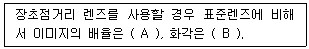
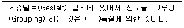
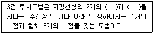
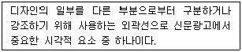

시각디자인산업기사 (2017-09-23 기출문제)
1과목: 색채학
1. 저드의 색채조화론에 포함되지 않는 원리는?
- 질서성의 원리
- 친근성의 원리
- 동류성의 원리
- 모호성의 원리
(정답률: 70%)

2. 감법혼색에서 노랑과 빨강을 혼합하면 무슨색이 되는가?
- 보라
- 연두
- 파랑
- 주황
(정답률: 92%)
3. 어린아이 옷의 흰색과 주황색의 배색이 주는 느낌은?
- 경쾌하다.
- 중후하다.
- 침착하다.
- 균형적이다.
(정답률: 91%)
4. 색채조화에 관한 설명으로 잘못된 것은?
- 그라데이션 배색 - 점전적으로 변화되는 색의 배색
- 세퍼레이션 배색 - 배색이 모호하거나 대비가 강할 때 색과 색 사이에 분리색으로 배색
- 토널 배색 - 고명도, 저채도의 조화로 안정된 배색
- 톤온톤 배색 - 동일색상에서 톤의 차이를 둔 배색
(정답률: 72%)
5. 다음 중 계통색명의 표시로 옳은 것은?
- 개나리색
- 황토색
- 선명한 연두
- 은회색
(정답률: 70%)
6. 색채조절(Color conditioning)에 관한 설명 중 옳지 않은 것은?
- 기능 배색이라고도 한다.
- 환경색이나 기능색 등으로 나우어 활용한다.
- 색채가 지닌 기능과 효과를 최대로 살리는 것이다.
- 기업체 이외의 공공건물이나 장소에는 부적합하다.
(정답률: 92%)
7. 색의 동화현상(同化現象)에 대한 설명 중 틀린 것은?
- 회색 줄무늬에서 인접한 청색 줄무늬는 채도 동화를 일으킨다.
- 주위 색의 영향으로 인접색과 서로 반대되는 경향에 있는 현상이다.
- 인접한 두 색의 무늬가 작을수록 동화현상이 잘 보여진다.
- 대비현상과는 반대의 현상이다.
(정답률: 74%)
8. 수술 시 생기는 잔상을 막기 위한 수술실 벽면의 색으로 적합한 것은?
- 보라
- 청록
- 노랑
- 회색
(정답률: 90%)
9. 한국의 전통색인 오정색과 방위가 맞는 것은?
- 청색 - 남쪽
- 적색 - 동쪽
- 백색 - 서쪽
- 황색 - 북쪽
(정답률: 67%)
10. 한국산업표준(KS)에서 유채색의 기본색명에 속하지 않는 것은?
- 갈색
- 다홍
- 자주
- 분홍
(정답률: 75%)
11. 문,스펜서 조화론의 미도에 관한 설명이 틀린 것은?
- 균형있게 선택된 무채색의 배색은 유채색의 배색보다 명도가 높다.
- 복잡성의 요소가 최고일 때 미도는 최고가 된다.
- 동일색상이 조화가 되기 쉽다.
- 색상과 채도를 동일하게 하고 명도만 변화시켜도 많은 색상을 사용한 디자인보다 미도가 높다.
(정답률: 65%)
12. 다음 중 병치 가법 혼색과 관련이 없는 것은?
- 텔레비전의 화상
- 인상파 화가의 점묘법
- 회전판의 2색 이상의 배색
- 직물의 직조
(정답률: 61%)
13. 먼셀(Munsell) 표색계에서 "5YR 6/12"로 표시된 색명은?
- 주황
- 자주
- 빨강
- 노랑
(정답률: 88%)
14. 지역의 명칭에서 유래한 색 이름이 아닌 것은?
- 나일 블루
- 코발트 블루
- 하바나
- 프러시안 블루
(정답률: 65%)
15. 현재 우리나라에서 한국산업표준(KS)으로 사용하고 있는 색채 시스템은?
- Munsell System
- PCCS
- Ostwald System
- NCS
(정답률: 76%)
16. 다음 배색 중 가장 차분한 느낌을 주는 것은?
- 빨강 - 흰색 - 검정
- 하늘색 - 흰색 - 회색
- 주황 - 초록 - 보라
- 빨강 - 흰색 - 분홍
(정답률: 85%)
17. 컬러 인화의 색보정 방법에 관한 설명 중 옳은 것은?
- 가법 인화법을 사용
- 평균 혼색 인화법을 사용
- 감색 인화법을 사용
- 중간가법 인화법을 사용
(정답률: 62%)
18. 다음 중 현색계에 속하지 않는 것은?
- Munsell System
- CIE System
- NCS
- DIN System
(정답률: 78%)
19. 보색의 설명 중 옳은 것은?
- 혼합하면 무채색이 된다.
- 보라와 파랑은 서로 보색관계이다.
- 색상환에서 거리가 가까운 색을 말한다.
- 보색끼리 배색하였을 때 차분한 효과를 준다.
(정답률: 81%)
20. 색채와 관련된 연상으로 가장 옳지 않은 것은?
- 핑크색은 달콤한 향을 연상시킨다.
- 고채도의 색은 높은 음을 연상시킨다.
- 올리브 그린색은 단맛을 연상시킨다.
- 회색은 딱딱한 표면을 연상시킨다.
(정답률: 94%)
2과목: 인쇄 및 사진기법
21. 지나친 노출이나 현상으로 인하여 필름 화상의 콘트라스트가 너무 강할 때 사용하는 감력방법으로 적절한 것은?
- 구리 감력
- 수은 감력
- 크롬 - 아연 감력
- 적혈염 - 하이포 감력
(정답률: 21%)
22. 활자 서체로서 가로, 세로의 넓이가 같고 각을 이룬 문자이며 강한 느낌을 주어 특별히 강조하거나 돋보이게 하기 위하여 사용하는 서체는?
- 명조체
- 고딕체
- 송조체
- 궁서체
(정답률: 83%)
23. 현상 과정에서 정착제의 주된 역할은?
- 할로겐화은을 금속은으로 바꾸어 준다.
- 빛에 노출되지 않은 할로겐화은을 제거해준다.
- 현상 주약의 산화를 방지해 준다.
- 물 자국이 발생하는 것을 방지해 준다.
(정답률: 39%)
24. 망사를 사용하여 제판하며 스퀴지(squeegee)로 가압하면서 피인쇄체에 인쇄하는 방법은?
- 오프셋 인쇄
- 플렉소 인쇄
- 그라비어 인쇄
- 스크린 인쇄
(정답률: 75%)
25. 다음 중 커플러(발색제)의 종류가 아닌 것은?
- Cyan 커플러
- Magenta 커플러
- Yellow 커플러
- Blue 커플러
(정답률: 87%)
26. 색온도에 대한 설명으로 옳은 것은?
- 빛의 색을 온도로 나타낸 것으로 단위는 K로 표시한다.
- 맑은 하늘의 색온도는 약 7500K이다.
- 색온도에서 절대온도 값을 빼면 화씨온도가 된다.
- 색온도가 낮으면 푸른색, 높으면 붉은색으로 나타난다.
(정답률: 77%)
27. 인쇄의 5요소에 해당하지 않은 것은?
- 원고
- 잉크
- 제책
- 피인쇄체
(정답률: 84%)
28. 다음 ( )안에 들어갈 알맞은 말은?

- A : 작고, B : 넓다
- A : 작고, B : 좁다
- A : 크고, B : 좁다
- A : 크고, B : 넓다
(정답률: 63%)
29. 투명체, 반투명체, 불투명체의 물체를 직접 인회지 위에 올려놓고 빛을 주어 생긴 그림자에 의해 구성되는 작품 또는 기법은?
- 포토그램
- 포토몽타주
- 디포메이션
- 이중인화
(정답률: 45%)
30. 한 권의 책 분량에 해당하는 쪽들을 순서대로 이어지도록 한 묶음씩 합치는 것을 무엇이라 하는가?
- 배킹
- 제함
- 고르기
- 쪽맞추기
(정답률: 77%)
31. IGT 인쇄적성 시험기로 측정할 수 없는 것은?
- 잉크의 전이율
- 잉크의 택(tack)
- 잉크 트래핑(trapping)
- 잉크에 의한 종이 뜯김성(picking)
(정답률: 43%)
32. 피사체 앞쪽 45˚정도의 조명으로서 적당한 입체감과 깊이가 표현되며 모든 조명의 기본적인 조명이라고 할 수 있는 것은?
- 측광
- 역광
- 사광
- 정면광
(정답률: 56%)
33. 렌즈를 통해 들어온 피사체의 상을 필름 면에 기록하기 위하여 빛의 양을 시간적으로 조절하는 장치는?
- 셔터
- 파인더
- 플래시
- 렌즈 후드
(정답률: 72%)
34. 초점거리가 50mm인 렌즈의 밝기가 1.4일 경우 렌즈의 유효구경은 약 얼마인가?
- 35.7mm
- 60.7mm
- 70mm
- 140mm
(정답률: 40%)
35. 자연광, 백열등, 형광등과 같은 불빛을 채광하여 축적한 에너지를 야간 또는 정전 등 빛이 차단된 상태에서 오랫동안 천천히 빛 에너지를 방출하는 잉크는?
- 도전 잉크
- 축광 잉크
- 발포 잉크
- 향료 잉크
(정답률: 80%)
36. 팬크로매틱형 리스필름(Panchromatic type lithfilm) 제판용 드럼 스캐너에서 주로 사용하는 He-Ne 레이저의 파장 피크치(nm)는?
- 132
- 332
- 632
- 1032
(정답률: 41%)
37. 다음 할로겐화은 중 감광물질로 사용되지 않은 것은?
- AgCI
- AgF
- AgBr
- AgI
(정답률: 60%)
38. 조리개에 관한 설명으로 옳지 않은 것은?
- 렌즈를 통과하는 빛의 양을 조절한다.
- 높은 조리개 값일수록 피사계심도가 깊다.
- 높은 조리개 값일수록 셔터시간을 빠르게 한다.
- 낮은 조리개 값일수록 통과하는 빛의 양이 늘어난다.
(정답률: 50%)
39. 촬영 후 수초(분)만에 흑백 또는 컬러 사진이 자동적으로 처리되어 카메라로부터 즉석으로 사진을 얻을 수 있는 방식은?
- 스파링식 카메라
- 파노라마식 카메라
- 리플레스식 카메라
- 폴라로이드식 카메라
(정답률: 97%)
40. 고무 블랭킷에 요구되는 성질로 옳지 않은 것은?
- 신축성과 복원성이 낮아야 한다.
- 화학 약품이나 용제에 내성이 있어야 한다.
- 잉크에 대한 친유성과 전이성이 좋아야 한다.
- 고무의 두께와 정밀도 및 표면 평활성이 좋아야 한다.
(정답률: 78%)
3과목: 시각디자인론
41. 발터 그로피우스(walter Gropius)가 바우하우스의 선언문에서 조형미술의 궁극적인 목표를 둔 것은?
- 공예
- 조각
- 건축
- 회화
(정답률: 74%)
42. 이탈리아 디자인의 특징과 가장 관련이 없는 것은?
- 급진주의 디자인
- 절제된 양식
- 개성위중 디자인
- 역사적 유산
(정답률: 59%)
43. 다음 ( )안에 알맞은 것은?

- 이해적
- 구성적
- 시각적
- 이상적
(정답률: 61%)
44. 기업 CI의 기본 요소들을 일정한 포맷(Format)으로 조합하여 일관성있게 유지, 활용할 수 있도록 하는 방법은?
- 시그니처(Signature)
- 아이케쳐(Eyecatcher)
- 디자인 코디네이션(Design Coordination)
- 코퍼레이트 이미지(Corporate Image)
(정답률: 54%)
45. 투시도의 구성요소에 대한 설명 중 틀린 것은?
- 시심(CV)은 관찰자의 초점이다.
- 기선(GL)은 화면과 지면이 만나는 선이다.
- 지평선(HL)은 물체와 시점간의 연결선이다.
- 화면(PP)은 지선, 기선, 관찰자의 시선과는 수직이며 관찰자와는 평행인 관계에 있다.
(정답률: 49%)
46. 아르누보(Art Nouveau)의 양식적 특징과 가장 관련이 깊은 것은?
- 유기적
- 기하학적
- 남성적
- 대칭적
(정답률: 64%)
47. 소점이 2개인 2점 추시도의 경우 중앙의 수직선은 실제적으로 무엇을 의미하는가?
- 물체의 중심선
- 두 초점 간의 중간
- 보는 사람의 위치
- 사이클로이드
(정답률: 42%)
48. 디자인 경영과 가장 중요하고 밀접하게 관련된 분야는?
- 소비자 심리분석
- 마케팅
- 시장조사
- 조직관리
(정답률: 77%)
49. 디자인 활성화를 위한 사회기반 조성 방안으로 거리가 먼 것은?
- 창조성 및 주체성을 고무하기 위한 시스템 조성
- 디자인 활동 지원을 위한 정보 시스템 구축
- 디자인 교육과 디자인 실무의 분리 확대
- 타 분야와의 교류 확대를 위한 제도 마련
(정답률: 66%)
50. 다음 중 컴퍼스를 사용하지 않고도 가장 용이하게 그릴 수 있는 것은?
- 세 변의 길이가 주어진 삼각형
- 각의 2등분
- 각의 이동
- 해칭선
(정답률: 67%)
51. 기계, 건축 등의 복잡한 도면에서 일부분의 축척을 바꾸어 모양, 치수, 기구 등을 분명히 하기 위해 그려진 것은?
- 결선도
- 조립도
- 부품도
- 상세도
(정답률: 81%)
52. 축구 선수의 큰 줄무늬 운동복, 철길 건널복의 금지표시 등으로 설명할 수 있는 디자인 원리는?
- 조화
- 규모
- 대비
- 통일
(정답률: 79%)
53. 다음 중 CI시스템의 기본 요소가 아닌 것은?
- 심볼마크
- 슈퍼그래픽
- 로고타입
- 기업컬러
(정답률: 81%)
54. 글자를 좌우로 압축하거나 확대하는 변형을 뜻하는 용어는 무엇이라 하는가?
- 세리프
- 장평
- 커닝
- 리딩
(정답률: 72%)
55. 주어진 2개의 ( )에 해당되는 용어로 알맞은 것은?

- 소점과 지점
- 소점과 시점
- 이점과 시점
- 이점과 지점
(정답률: 80%)
56. 일반적인 디자인 분류의 3대 영역은?
- 제품, 시각, 환경
- 시각, 제품, 공예
- 시각, 조각, 제품
- 시각, 공예, 환경
(정답률: 74%)
57. 다음 설명 중 틀린 것은?
- 기업의 목표는 이익 증대와 기업의 확장이고 여기에 디자인이나 다른 부분적인 목적이 종속되어있다.
- 기업에 소속된 디자이너는 디자인을 할 때 기업의 관심과 목표보다는 개인의 개성과 만족에 최선을 다해야 한다.
- 모든 산업 생산과 기업의 정책은 제품을 소비하는 시장의 상태에 달려 있다.
- 기업 내의 디자이너는 경제적인 측면을 충분히 고려해야 한다.
(정답률: 89%)
58. 굿 디자인(Good Design) 상품의 핵심 구성요소가 아닌 것은?
- 심미성, 창의성
- 기능성, 생산성
- 경제성, 환경친화성
- 장식성, 응용성
(정답률: 77%)
59. 1920년대 미국의 대공황이 디자인 발전에 영향을 준 가장 큰 이유는?
- 빈부의 차이가 사치스러운 디자인을 촉발시켰다.
- 제품 생산의 축소로 디자인에 대한 인력이 여유가 생겼다.
- 소비의 급격한 하락으로 판매의 수단이 되는 디자인을 필요로 하게 되었다.
- 미국의 대공황으로 상대적 부유층이 디자인을 요구하였다.
(정답률: 76%)
60. 미술공예운도(Art and Crafts Movement)의 설명으로 틀린 것은?
- 수공예를 중시하여 인간의 주체성을 정신문화로 끌어 올리는 역할을 하였다.
- 19세기 후반 영국의 윌리엄 모리스(W.Morris)에 의해 주도되었다.
- 레드하우스에 제작된 제품은 저렴하여 대중을 위한 것이었다.
- 고딕양식을 모방하고 재현하려는 절충주의적 경향을 보였다.
(정답률: 48%)
4과목: 시각디자인실무 이론
61. 마케팅 전략은 기업이 마케팅 목표를 달성하기 위하여 어떠한 방향으로 나아갈 것인가를 나타내는 것으로 이 전략의 처음 단계는?
- 마케팅 전략의 수립
- 마케팅 실행 계획의 수립
- 목표시장의 선정
- 시장 점유율 계획
(정답률: 52%)
62. 캘린더(calender)의 기능으로 거리가 먼 것은?
- 보호와 보존의 기능
- 정보전달의 기능
- 장식적 기능
- 광고매체로서의 기능
(정답률: 65%)
63. 다음 중 아이디어발상을 저해하는 요인이 아닌 것은?
- 고정관념
- 선입관
- 다양한 발상
- 자기 규제
(정답률: 83%)
64. 레터링에 관한 설명이 틀린 것은?
- 넓은 의미로 글자디자인, 글자표현 및 글자의 기능이나 글자 자체를 의미한다.
- 특정한 목적을 가지는 글자를 디자인하는 것이다.
- 일러스트레이션을 활용하여 내용이 효과적으로 전달되도록 하는 것이다.
- 전달하고자 하는 주제에 맞도록 문자를 활용하여 시각화하는 것이다.
(정답률: 56%)
65. 브레인스토밍(brainstorming)의 발상기법에 대한 설명으로 옳은 것은?
- 머리 속에 저장된 아이디어를 혼자 발전시켜 표현하는 기법
- 각 사람들의 아이디어를 상급자에게 보고하는 기법
- 조직 내 상급자의 아이디어를 발전시켜 표현하는 기법
- 그룹을 구성하여 자유롭게 아이디어를 발상하는 기법
(정답률: 87%)
66. 다음 내용은 신문광고 중 어는 요소에 대한 설명인가?

- 헤드 라인
- 보더 라인
- 언더 라인
- 디센더 라인
(정답률: 63%)
67. 광고는 4P 중 어느 영역에 속하는가?
- 제품(product)
- 가격(price)
- 촉진(promotion)
- 유통(place)
(정답률: 86%)
68. 썸네일 스케치(Thumbnail Sketch)란?
- 결정된 콘셉트를 표현하기 위해 여러 가지의 그림, 문자로 작게 시각화한 것
- 2차 리뷰에 붙여진 스케치 중 아이디어로 선택되어 정밀하고 세밀하게 보완하여 완성도가 있는 상태로 그려지는 것
- 디자인의 구성 요소들을 보기 좋게 배열해 놓은 것
- 제작의도를 정확히 알리려고 마무리에 충실하게 그려 놓은 것
(정답률: 83%)
69. 레터링을 할 때 글자체가 가지고 있는 전체적인 조화를 위해 가장 중요하게 고려해야 할 요소는?
- 기능
- 균형
- 변화
- 율동
(정답률: 84%)
70. 라이프 스타일(Life style)에 대한 설명으로 틀린 것은?
- 소비자의 과거학습, 사회계층, 인구통계 변수에 의해 결정된다.
- 사회전체 또는 사회 일부 계층의 차별적이고 특징적인 생활양식이다.
- 현재의 라이프 스타일 연구는 개성과 자아개념 등과 같은 내적동기를 포함하여 조사하는 것이다.
- 소비자들의 가치관을 반영하지 못하기 때문에 소비자 변모를 나타내는 지표로 사용할 수 없다.
(정답률: 65%)
71. RGB컬러 표현방식에서 트루컬러(True color)가 표현가능한 색상의 비트 수는?
- 8
- 4
- 24
- 16
(정답률: 71%)
72. 시각 커뮤니케이션 과정의 3가지 구성 요소가 아닌 것은?
- 발신자
- 수신자
- 매체
- 잡음
(정답률: 94%)
73. 시각디자인 과정의 순서가 맞는 것은?
- 기획 → 시장조사 → 전략수립 → 비주얼 아이데이션 → 시안디자인 → 프레젠테이션 →최종디자인 → 제작 및 사후관리
- 기획 → 시안디자인 → 프레젠테이션 → 비주얼 아이데이션 → 제작관리 및 사후관리 → 전략수립 → 시장조사 → 최종디자인
- 시장조사 → 기획 → 비주얼 아이데이션 → 전략수립 → 시안디자인 → 프레젠테이션 → 최종디자인 → 제작 및 사후관리
- 전략수립 → 시장조사 → 기획 → 시안디자인 → 비주얼 아이데이션 → 프레젠테이션 → 최종디자인 → 제작 및 사후관리
(정답률: 85%)
74. 최대 256색을 표현할 수 있으며 파일의 압출률이 좋고 투명도, 인터레이스, 애니메이션이 지원 가능한 파일 포맷은?
- jpge
- png
- gif
- bitmap
(정답률: 67%)
75. 옥외광고의 특성과 가장 거리가 먼 것은?
- 제작비가 저렴하다.
- 세분화된 소비자층에게 소구하는 제품광고에는 적절하지 않다.
- 지역적 선별성은 높으나 인구통계적 선별성은 낮다.
- 장소에 따라 주목률을 높일 수 있다.
(정답률: 71%)
76. 사물의 형태에 따라 그 기억의 유지정도가 달라지는데 다음의 형태 중 가장 기억하기가 어려운 것은?
- 정삼각형
- 원
- 규격화된 형태
- 불규칙적인 형태
(정답률: 92%)
77. 소비자의 욕구에 적합한 시장성 있는 상품 판매를 위해 시기, 수량, 가격결정, 판촉방법 등을 입한하고 시행하는 제품(상품)화 계획은?
- 제품디자인
- 라이프사이클
- 선회이론
- 머천다이징
(정답률: 56%)
78. 150선 이상의 망목 스크린 인쇄 시 가장 적합한 종이 재료는?
- 중절지
- 아트지
- 갱지
- 모조지
(정답률: 59%)
79. 다음 중 컴퓨터의 발전과정 순서가 옳은 것은?
- UNIVAC → ENIAC → EDVAC → EDSAC
- EDSAC → UNIVAC → EDVAC → ENIAC
- ENIAC → EDSAC → UNIVAC-1 → EDVAC
- EDVAC → EDSAC → ENIAC → UNIVAC
(정답률: 74%)
80. 편집디자인(Editorial Design)의 요소를 옳게 나열한 것은?
- 슈퍼그래픽, 포토그래피, 일러스트레이션, 인쇄보더라인
- 타이포그래피, 텍스타일, 레이아웃, 레터링
- 타이포그래피. 그리드시스템, 일러스트레이션, 레이아웃
- 타이포그래피, 디스플레이, 레이아웃, 아이디어스케치
(정답률: 55%)